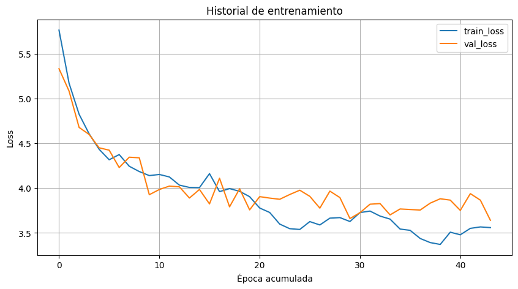
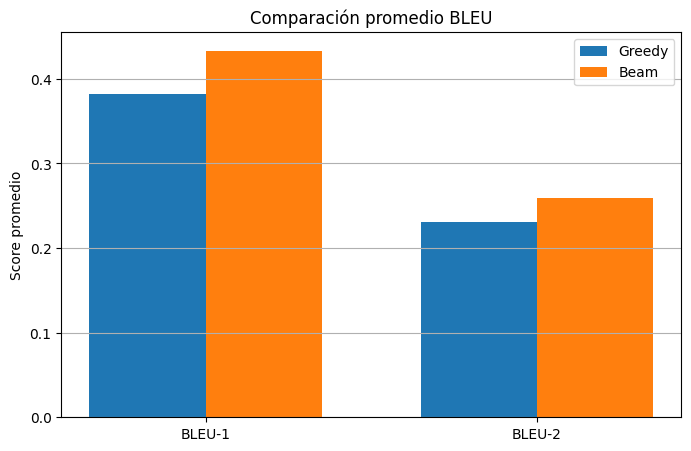

Extracción visual
Se utilizó MobileNetV2 como CNN para extraer una representación compacta de cada imagen. Estas features visuales son la base de entrada del modelo.
Proyecto Deep Learning
Desarrollo de una red neuronal para image captioning usando Flickr8k, MobileNetV2 para extracción de características visuales y una arquitectura secuencial con Embedding + LSTM para generación automática de captions.
Objetivo
El objetivo fue construir una red neuronal capaz de generar descripciones automáticas a partir de imágenes. Para ello se utilizó el dataset Flickr8k, que combina imágenes reales con múltiples captions de referencia por cada caso.
El proyecto no se limitó a entrenar un modelo: también integró una fase de evaluación cuantitativa y cualitativa, comparando estrategias de inferencia como Greedy Search y Beam Search para analizar el comportamiento de las secuencias generadas.
Datos
imágenes con captions originales
imágenes válidas tras filtrado
imágenes para entrenamiento
imágenes para validación
palabras en el vocabulario
longitud máxima de secuencia
El flujo incluyó descarga del dataset, limpieza de captions, extracción de features, construcción del tokenizer, división train/validation y generación de artefactos reutilizables para entrenamiento y evaluación.
Arquitectura
Se utilizó MobileNetV2 como CNN para extraer una representación compacta de cada imagen. Estas features visuales son la base de entrada del modelo.
El decoder se construyó con Embedding + LSTM, permitiendo generar palabra por palabra la descripción final a partir de las features visuales y del contexto secuencial previo.
CNN: MobileNetV2
Decoder: Embedding + LSTM
Dataset: Flickr8k
Salida: captions automáticos
Evaluación: BLEU + análisis cualitativo
Comparación: Greedy vs Beam SearchEntrenamiento
Durante el entrenamiento se observó una reducción progresiva de la pérdida, con oscilaciones esperables entre entrenamiento y validación. El mejor valor de val_loss alcanzado en la corrida final fue 3.6412.

Evaluación
La evaluación cuantitativa mostró que Beam Search superó a Greedy Search en las métricas promedio BLEU-1 y BLEU-2 sobre la muestra evaluada.
0.382
0.231
0.433
0.260

Resultados cualitativos
A continuación se presenta una muestra de imágenes del dataset con sus captions generadas previamente en Colab. El visor permite recorrer ejemplos y comparar la salida del modelo con las referencias reales disponibles.
Cargando resultados...
Imagen: -
-
-
Conclusión
El proyecto permitió desarrollar y evaluar una red neuronal de image captioning usando Flickr8k, integrando preparación de datos, entrenamiento, evaluación cuantitativa y revisión cualitativa de resultados.
Los resultados muestran que el modelo fue capaz de generar descripciones automáticas plausibles y que la estrategia Beam Search ofreció un mejor desempeño promedio frente a Greedy Search en la muestra analizada.